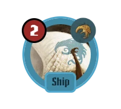
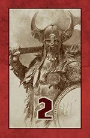

نوبت شماست۲۱ ساعتعصر ۲، اقدام


توسط نیلوفر


نقشه روی روستاهای مجاز بزرگ میشود؛ اثر ترول پیش از «ثبت» در داک دیده میشود.
همان دکمههای BGA؛ «بازی مأموریت» نیست چون کارت مأموریت در دست ندارید.
مهره روی نقشه ۴ از ۵ (شاخ): فقط یک یورش دیگر جا دارید.
دستهٔ رسیده در سه ستون؛ زدن روی کارت بزرگش میکند، دوباره زدن انتخاب.
قدرت مهرههای هر طرف، بعد انتخاب پنهانی کارت.
 نبرد در آنگربوداقدرت مهرهها پیش از کارت
نبرد در آنگربوداقدرت مهرهها پیش از کارتنه جایگاه در سه ردیف، ذخیره و والهالا، ویژگیها.


مأموریت، راگناروک و والهالا در یک شیت؛ فقط انتخاب ویژگی تصمیم است.
 مانهایم! انجام شدراگناروک: الواگارآزادی از والهالا
مانهایم! انجام شدراگناروک: الواگارآزادی از والهالااز کتاب قوانین CMON (ص ۱۳ تا ۱۹) و متن کارتها؛ چون موتور در ریپو نیست، این جدول قرارداد UI و موتور است (ENGINE.md §۵). دکمهٔ هر اقدام هزینهاش را از فیلد cost در legalActions نشان میدهد و اگر غیرمجاز است، دلیلش را از reason.
| اقدام | هزینه | شرط و اثر | هدف روی میز | کد خطا |
|---|---|---|---|---|
یورشinvade | خشم = قدرت مهره (سردار، سرکردهٔ کوتولهها، سرباز هِل: ۰) | مهره در ذخیره؛ مهرههای روی نقشه کمتر از شاخ؛ روستای خالی در استان بیرونی سالم. کشتی (و مار دریایی) فقط به آبدره. ایگدراسیل فقط جن تاریکی. | روستاهای خالی، آبدرهها | NO_RAGE HORNS_FULL NOT_IN_RESERVE VILLAGE_TAKEN PROVINCE_DESTROYED YGGDRASIL_MARCH_ONLY SHIP_FJORD_ONLY |
لشکرکشیmarch | ۱ خشم | از یک استان (نه آبدره) به یک استان دیگر، هر تعداد مهرهٔ غیرکشتی، تا جای روستای خالی. ایگدراسیل بیسقف. همسایه بودن لازم نیست. | استان مبدأ، مهرهها، استان مقصد | NO_RAGE SHIPS_CANNOT_MOVE NOT_ENOUGH_VILLAGES SAME_PROVINCE |
ارتقاupgrade | خشم = قدرت کارت (افسون فریگا −۱) | کارت ارتقا از دست روی جایگاه همان نوع؛ کارت قبلی دور ریخته میشود (هیولای قبلی از بازی بیرون). حداکثر ۲ هیولا. ارتقای مهره یا هیولا: یورش رایگان فوری اختیاری. | جایگاههای صفحهٔ قبیله | NO_RAGE NOT_UPGRADE_CARD SLOT_MISMATCH |
مأموریتquest | رایگان (خشم باید بیش از صفر باشد) | کارت مأموریت از دست رو به پایین روی کارت قبیله. تعداد نامحدود. | کارتهای مأموریت دست | NO_RAGE NOT_QUEST_CARD |
غارتpillage | رایگان (خشم باید بیش از صفر باشد) | استان سالم و غارتنشده که مهرهٔ شما در آن یا آبدرهٔ پشتیبانش هست ← نبرد (§۲۱). | نشانهای غارت | NO_RAGE ALREADY_PILLAGED NO_PRESENCE PROVINCE_DESTROYED |
کنار کشیدنpass | همهٔ خشم باقی | تا پایان فاز اقدام دیگر اقدامی ندارید؛ در نبردها هنوز شرکت میکنید. | — | — |
کارت قبیلهclan | طبق کارت | اقدام کارت قبیله: هماورد تیر (۲ خشم، غارت دوباره)، فداکاری فریگا (۲ مهره را نابود کن، یک ویژگی +۱). | استان / مهرهها | NO_RAGE CARD_NOT_OWNED |
خشم صفر: هیچ اقدامی، حتی رایگان؛ ولی فراخوان نبرد و کارت نبرد ممکن است. پایان فاز اقدام: خشم همه صفر یا همهٔ استانهای سالم غارتشده. یورش سردار رایگان است.
موتور در state.pending میگوید منتظر چه کسی و چه تصمیمی است؛ pendingSeats همین صندلیها را برمیگرداند و UI نوار وضعیت را از آن میسازد («منتظر آرش: فراخوان نبرد»).
| نوع | چه کسی | کِی | گزینهها | طرح |
|---|---|---|---|---|
draftPick | همه، همزمان | هدایای خدایان | یک کارت (۲ نفره: دو کارت) از دستهٔ رسیده | §۲۰، §۲۷ |
freeInvade | بازیکن نوبت | پس از ارتقای مهره یا هیولا | یورش رایگان با همان مهره یا رد | §۲ |
extraWarrior | بازیکن نوبت | یاری فریگا پس از هر یورش | یک جنگجوی رایگان در همان استان یا رد | §۲ |
instantPillage | بازیکن نوبت | قلمرو تور پس از یورش | ۲ خشم و غارت فوری یا رد | §۲ |
callToBattle | هر بازیکن به ترتیب از چپ غارتگر | غارت | یک مهره از استان همسایه به روستای خالی یا رد | §۲۱ |
battleCard | همهٔ شرکتکنندهها، همزمان | نبرد | یک کارت پنهان (یا هیچ اگر دست خالی است) | §۲۱، §۲۸ |
afterReveal | به ترتیب از غارتگر | پس از آشکار شدن | کارت با دایرهٔ سفید یا رد | §۲۱ |
keepOneFigure | هر شرکتکننده | موج اودین | یک مهره برای ماندن | §۲۱ |
replayCards | شرکتکنندهها | دیدبان هایمدال | کارت تازه | §۲۱ |
saveFigure | صاحب مهره | پناه فریگا هنگام نابودی | ۱ خشم و نجات یا رد | §۲۱ |
retreat | صاحب جادوگر وُلور | نابودی در استان بیرونی | عقبنشینی به ایگدراسیل یا رد | §۲۱ |
keepCards | برنده | دلاوری تیر | هر کارت آشکار با ۱ خشم | §۲۱ |
moveLeader | غارتگر | سرور پتکها پس از غارت | استان همسایه یا ماندن | §۲۱ |
loserInvade | بازنده | برکت لوکی | یورش رایگان با جنگجو یا رد | §۲۱ |
raiseStat | یک بازیکن | مأموریت موفق، سوگند تور، سرور تبرها، لطف فریگا، فداکاری فریگا | خشم / تبر / شاخ | §۲۲، §۳۰ |
discardKeep | همه، همزمان | دور ریختن (عصر ۱ و ۲) | یک کارت برای عصر بعد | §۲۲ |
متن کامل، نوعها و نمونهٔ وضعیت در ENGINE.md و data/mock-state.json. ساختار مثل بقیهٔ بازیهای games/: definition.ts، rules.ts (GameModule)، types.ts، content/، renderer.tsx، renderer.css.
// state (server, hidden parts included)
BloodRageState {
players, clans[seat], age 1..3,
phase: 'draft'|'action'|'discard'|'quest'
|'ragnarok'|'valhalla'|'ended',
first, turn, ragnarok[3], destroyed[],
pillage{prov: {reward, pillaged}},
figures[{id, seat, kind, monster?, where}],
rage[], stats[{rage,axe,horn}], glory[],
hands[][], quests[][], upgrades[],
draft?, battle?, pending?, decks[3],
discardPublic[], log[], outcome
}// legalActions(state, viewer) -> ActionHint[]
{ type:'invade', figure:'f12', slot:9,
cost:{rage:2}, effects:[{kind:'destroy',
figures:['f31']}] }
{ type:'march', from:0, to:3,
figures:['f0'], cost:{rage:1} }
{ type:'upgrade', card:61, slot:'monster',
index:1, cost:{rage:1}, replaces:null }
{ type:'pillage', province:3, cost:{rage:0} }
{ type:'invade', disabled:true,
reason:'HORNS_FULL' }// publicSummary(state) (DS contract)
seats[k] = {
primary:{label:'افتخار', value:glory},
stats:[ {key:'rage', value:rage[k]},
{key:'cards', value:hand count},
{key:'map', value:'4/5'},
{key:'quests', value:count} ],
badges:[first player, out of rage],
status:'playing'|'passed'|'done'
}
shared: age, phase, doom province#9D3644مار #DFA471کلاغ #428AA7خرس #856348قوچ #70A15Eاز دادهٔ BGA؛ متن روی سطح روشن با نسخهٔ -ink.
همان نوار بالای همهٔ میزها؛ دکمهٔ زبان و قوانین.
متن نوبت، اقدامها، قدمها، هدفها، خلاصه و ثبت.
برچسبهای BGA: بازی مأموریت/ارتقا/هیولا (فقط با چنین کارتی)، یورش، لشکرکشی، غارت، کنار کشیدن؛ هزینه در «یورش با».


هدفها فقط روی نقشه و صفحهٔ قبیله (BGA)؛ زیر نوار یک خط هزینه و اثر.
لوگو چپ بالا؛ نشان عصر و فلش بخشها راست بالا؛ آخرین نبرد وسط؛ بزرگنمایی چپ؛ بایگانی، دورریخته، والهالا چپ پایین.
همهٔ جاها درصدی از ۱۶۰۰ واحد؛ layout.json.
وسط استان؛ پس از غارت پلاک تیرهٔ «غارت موفق توسط …» (BGA).
قرص راگناروک روی مرکز استان (۱۰٫۶٪).
روی جای doom استانِ راگناروکِ این عصر.

توکن BGA با قدرت و نشان قبیله؛ ارتقا ← توکن ارتقایافته.
روستا = یک مهره؛ ایگدراسیل حلقه دور مرکز؛ کشتیها ردیفی روی آبدره.
حلقهٔ کهربایی؛ شبح مهرهٔ در حال یورش؛ قرمز = نابود میشود.

تصویر انگلیسی BGA بدون زیرنویس؛ نام و متن فارسی در راهنما.

hover / نگهداشتن: نام و متن فارسی و انگلیسی.
۹ جایگاه BGA در ۵ ستون، همیشه چپبهراست؛ «ذخیره» و «مأموریتها».
همهٔ توکنهای ذخیره در شبکه (BGA)؛ والهالا پنجرهٔ خودش.
نشان «عصر ۲» روی نقشه پنجرهٔ سه عصر و فازها را باز میکند.


BGA: نام، افتخار ★، نشان قبیله، خشم، کارت دست، بازیکن اول، سه ویژگی x/حداکثر، جزئیات آمار.
هر خط با رنگ قبیله؛ کارتها با نام فارسی.

دستهٔ رسیده، نگهداشتهها، منتظر بقیه.
فراخوان، کارت پنهان، آشکار و نتیجه.
دور ریختن، مأموریت، راگناروک، والهالا.
امتیاز افسانهای +۱۰/+۲۰ و رتبه.

آمار قبیله، والهالا، مأموریتها، راهنما.
یورش، اقدامها، درفت، نبرد، قبیله، پایان عصر.